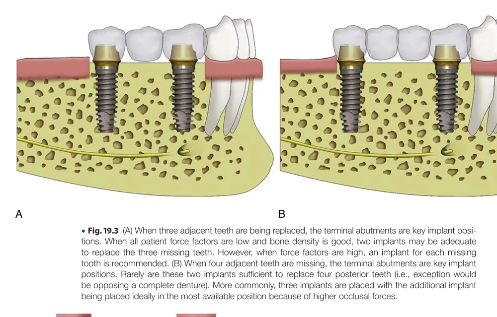
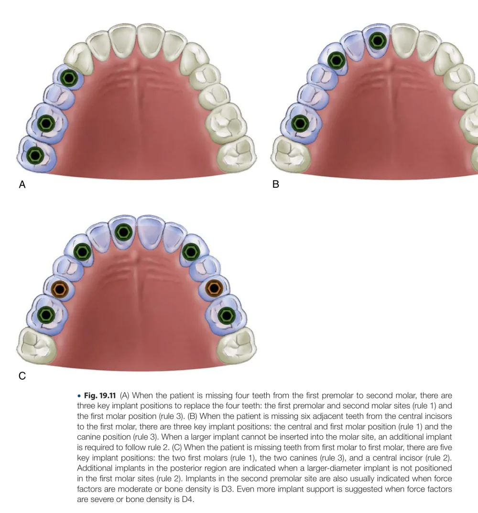

نسخه استخراجشده؛ ترجمه یا تأیید علمی انجام نشده است. وضعیت: captured
برای پروتز ثابت چهار راهنمای کلی وجود دارد که در پنج عنوان کوتاه خلاصه میشوند: بدون کانتیلور، حداکثر سه پونتیک مجاور، کانین، قاعدهی مولر، دینامیک قوس.
در این بخش دو قاعدهی نخست و در بخش بعد دو قاعدهی دیگر (کانین و مولر اول، و دینامیک قوس) را میبینیم.
قاعدهی ۱ — کانتیلور و تکیهگاه انتهایی:
«کانتیلورها روی پروتز باید کاهش یابند و ترجیحاً حذف شوند (بهویژه در ماگزیلا)؛ بنابراین تکیهگاههای انتهایی در پروتز، موقعیتهای کلیدی هستند.»
به منطق این جمله دقت کن — یک استنتاج است، نه یک قاعدهی دلبخواهی. اگر کانتیلور نمیخواهی، پس پروتز باید در هر دو انتها تکیهگاه داشته باشد. و همین، دو انتها را به موقعیتهای کلیدی تبدیل میکند.
و قید «بهویژه در ماگزیلا» را نگه دار — تراکم استخوان ماگزیلا پایینتر است و همان کانتیلور آنجا خطرناکتر است.
قاعدهی ۲ — حداکثر سه پونتیک مجاور:
«بیش از سه پونتیک مجاور نباید در پروتز طراحی شود.»
همانطور که روی دندان طبیعی هم منع دارد؛ تنها استثنایش وقتی است که عوامل نیرو بسیار پایین و شرایط محل ایمپلنت (تراکم و حجم استخوان) مساعد باشد.
و اکنون فیزیک پشت این عدد — که مهمتر از خود عدد است:
«همهی دهانههای پونتیک میان تکیهگاهها زیر بار خم میشوند. هرچه دهانه میان تکیهگاهها بزرگتر باشد، انعطافپذیری در پروتز بیشتر است. هرچه بار بیشتر باشد، خمش بیشتر است.»
و پیامدش: «این خمش حاصل، بارهای برشی و کششی بر تکیهگاهها وارد میکند.»
برشی و کششی — دو نوع نیرویی که از یونیت اول میدانی استخوان کمترین مقاومت را در برابرشان دارد.
و فهرست عوارض: «هرچه خمش بیشتر، خطر شکست پرسلن/زیرکونیا، خارج شدن پروتز از سمان، و شل شدن پیچ اباتمنت افزایش مییابد.»
و اکنون نکتهای که این قاعده را از پروتز متعارف جدا میکند:
«خمش مواد ترمیمی در یک دهانهی بلند، برای ایمپلنت مشکلسازتر از دندان طبیعی است.»
و دلیلش: «چون ریشههای دندان طبیعی تحرک همراه دارند، هم اپیکالی و هم جانبی، دندان بهعنوان یک جذبکنندهی استرس عمل میکند و مقدار خمش ماده ممکن است کاهش یابد. ایمپلنت رژیدتر از دندان است (و مدول الاستیسیتهی بزرگتری هم از دندان طبیعی دارد)، بنابراین عوارض بار افزایشیافته و خمش ماده برای پروتز ایمپلنت بیشتر است.»
این همان الگوی آشناست: دندان بهخاطر تحرکش محافظت میکند؛ ایمپلنت بهخاطر رژید بودنش محافظت نمیکند. پس همان دهانه روی ایمپلنت عارضهی بیشتری میسازد تا روی دندان.
و یک ناحیه بهطور ویژه حساس است: «این بهویژه در پروتزهای قدامی ماگزیلا حیاتی است، جایی که نیروهای زاویهدار مقدار نیروی وارد بر سیستم ایمپلنت را تشدید میکنند.»
و دو راهکار عملی برای کاهش اثر دهانه:
«دهانهی پونتیکها در طرح درمان ایدهآل باید با کاهش میز اکلوزال و ارتفاع کاسپ محدود شود.»
و یک ترفند ابعادی: «اگر فضایی به اندازهی یک مولر (در بُعد مزیوـدیستالی) جایگزین میشود، میتوان از اندازهی دو دندان پرمولرـمانند استفاده کرد.»
و منطقش: «با باریک کردن میز اکلوزال، مقدار نیروهای مخرب (یعنی برشی و خارج از محور) نیروی وارد بر سیستم را کاهش میدهد. با کاهش ارتفاع کاسپ، احتمال نیروهای برشی بهطور چشمگیری کم میشود.»
هر دو راهکار را از اصول اکلوژن محافظ ایمپلنت (IPO) میشناسی — و اینجا میبینی که همان اصول در سطح طرح درمان هم به کار میآیند، نه فقط در تنظیم اکلوژن.

قاعدهی ۳ — کانین و مولر اول:
«جایگاههای کانین و مولر اول موقعیتهای کلیدی هستند، بهویژه وقتی دندانهای مجاور غایباند.»
و چرا کانین؟ پاسخ روشن است:
«یک ترمیم ثابت که جایگزین کانین میشود، در خطر بیشتری از تقریباً هر ترمیم دیگری در دهان است.»
و دلیلش در دندانهای همسایه است: «انسیزور مجاور ماگزیلا یا مندیبل یکی از ضعیفترین دندانهای دهان است، و پرمولر اول اغلب یکی از ضعیفترین دندانهای خلفی است.»
ببین منطق چقدر ظریف است: کانین کلیدی است نه فقط بهخاطر نقش خودش در گاید — که در ماژول ۱ دیدی — بلکه چون هر دو همسایهاش ضعیفاند. اگر کانین را با پونتیک جایگزین کنی، بار را روی دو ضعیفترین تکیهگاه ممکن میگذاری.
قاعدهی ۴ — دینامیک قوس و پنج بخش:
«قوس به پنج بخش تقسیم میشود. وقتی بیش از یک بخش از یک قوس جایگزین میشود، موقعیت کلیدی ایمپلنت دستکم یک ایمپلنت در هر بخش است.»
و یک تصویر روشن: «یک قوس میتواند بهعنوان یک پنتاگون باز در نظر گرفته شود: دو جایگاه پرمولر و مولر، دو جایگاه کانین، و انسیزورهای مرکزی و جانبی، پنج ضلع را تشکیل میدهند.»
پنج ضلع: خلفی راست، کانین راست، قدامی، کانین چپ، خلفی چپ.
و چرا این تقسیمبندی مهم است؟ چون هر بخش تقریباً یک خط راست است و بهتنهایی در برابر نیروی جانبی مزیت بیومکانیکی چندانی ندارد. وقتی دو بخش یا بیشتر به هم وصل شوند، اثر سهپایه پدید میآید و از تکیهگاههای انتهایی دیستال تا قدامیترین پایهی میانی، یک فاصلهی A-P ساخته میشود.
و اکنون سه نمونهی کاربردی که ارزش تمرین دارند:
نمونهی یکم — چهار دندان از پرمولر اول تا مولر دوم غایب: سه موقعیت کلیدی — جایگاههای پرمولر اول و مولر دوم (قاعدهی ۱) و موقعیت مولر اول (قاعدهی ۳).
نمونهی دوم — شش دندان مجاور از انسیزور مرکزی تا مولر اول غایب: سه موقعیت کلیدی — مرکزی و مولر اول (قاعدهی ۱) و موقعیت کانین (قاعدهی ۳). و یک قید: «وقتی ایمپلنت بزرگتری نتواند در جایگاه مولر قرار گیرد، یک ایمپلنت اضافی برای پیروی از قاعدهی ۲ لازم است.»
نمونهی سوم — از مولر اول تا مولر اول غایب: پنج موقعیت کلیدی — دو مولر اول (قاعدهی ۱)، دو کانین (قاعدهی ۳)، و یک انسیزور مرکزی (قاعدهی ۲).
و دو شرط تشدید که مستقیماً از ماژول ۱ میآیند:
«ایمپلنت در جایگاه پرمولر دوم نیز معمولاً وقتی اندیکاسیون دارد که عوامل نیرو متوسط یا تراکم استخوان D3 باشد. حتی پشتیبانی ایمپلنتی بیشتری پیشنهاد میشود وقتی عوامل نیرو شدید یا تراکم استخوان D4 باشد.»
پس این چهار قاعده یک کف را تعیین میکنند، نه یک عدد نهایی. عوامل نیرو و تراکم استخوان، شمار را از آن کف بالاتر میبرند.
و یک اصطلاح که باید بشناسی: وقتی سه دندان خلفی (پرمولر دوم و دو مولر) غایباند، سه موقعیت کلیدی لازم است — دو تکیهگاه انتهایی و تکیهگاه میانی مولر اول، که به آن «پایهی میانی» (pier abutment) گفته میشود.
